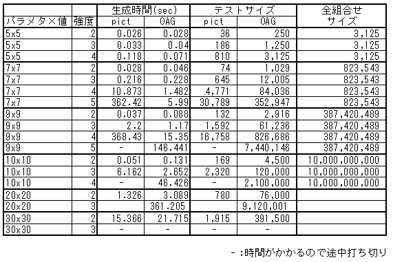

ソフトウェアテストを想定し，試しに作ってみました。
一晩で100万件くらいの自動テスト流すことを想定しています。
パラメタ10個，それぞれの値が10個，のモデルファイルに対し，
強度が4のCovering Arrayを簡単に生成できることを目的とします。
ただし，最少のテストケースになることは求めません。
ソフトウェアの自動テストであれば100万件くらいは一晩で流せるためです。
欲張って最適解を探すアルゴリズムを入れていないため，
強度があがってもそれなりに生成できます。
が，あまりにも無欲なので，テストサイズが大きすぎます。
試しに作ってみたものの，もっと考える余地があります。
mf_5_5.txt
A : a1,a2,a3,a4,a5 B : b1,b2,b3,b4,b5 C : c1,c2,c3,c4,c5 D : d1,d2,d3,d4,d5 E : e1,e2,e3,e4,e5[hyam@hyam sample]$ OAG mf_5_5.txt -algorithm BigCA -strength 4
強度2,3なら圧倒的にpictがよいですね．．．
-algorithm BigCAは，まだダメだな。
